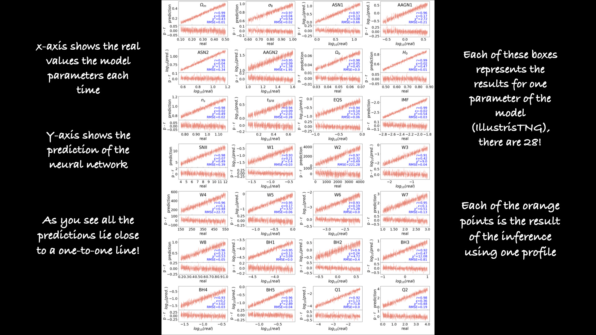
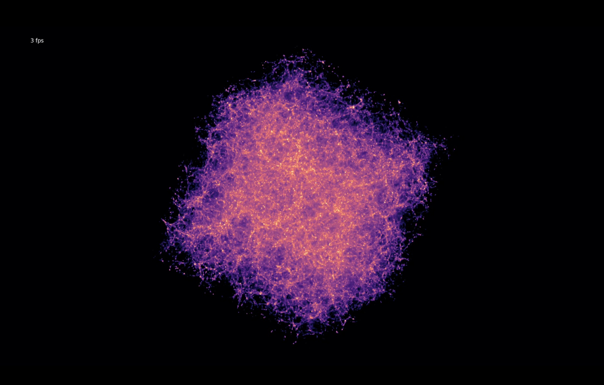

Machine Learning
Solving cosmology with galaxy cluster profiles
Galaxy clusters are the largest groupings in the universe and contain valuable information about cosmic evolution. A key challenge is distinguishing astrophysical phenomena, such as active galactic nuclei and stellar feedback, from genuine cosmological signals.
Using neural networks, I demonstrated that we can separate and analyze the effects of cosmic and galactic processes in galaxy cluster profiles. This allows us to disentangle cosmological from astrophysical influences and derive universal parameters.


Cosmology and Astrophysics with MachinE Learning Simulations (CAMELS)
CAMELS is a gigantic collection of different universes, each with a different cosmology and different astrophysics. I contribute simulations using the Magneticum model and combine them with machine learning to predict cosmological and astrophysical parameters.
Learn more at camel-simulations.org